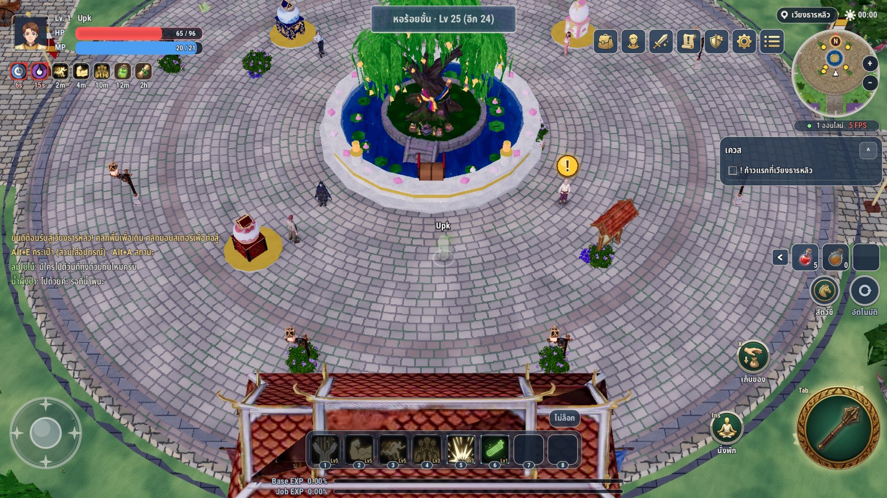
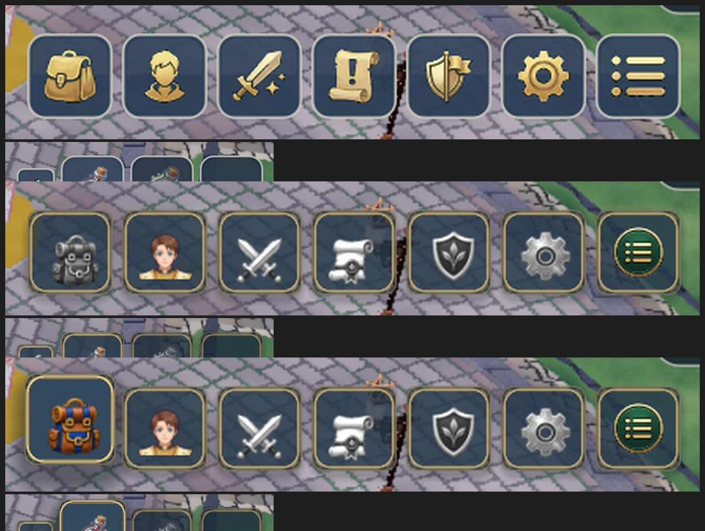
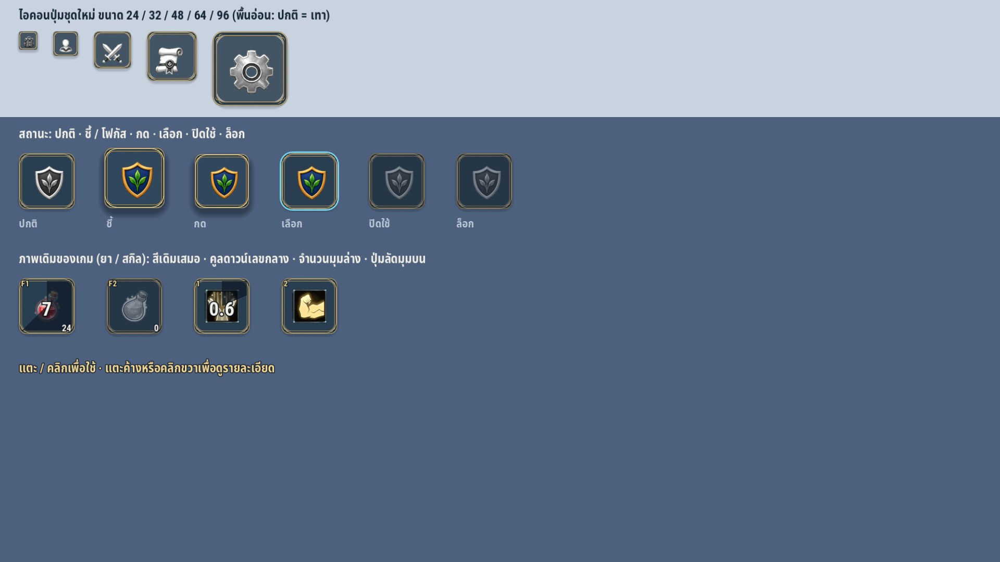
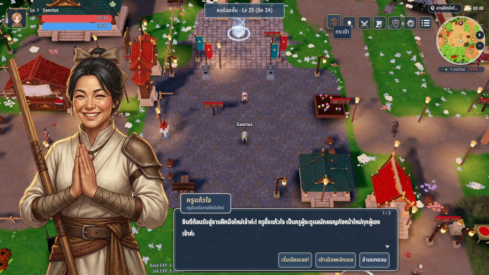
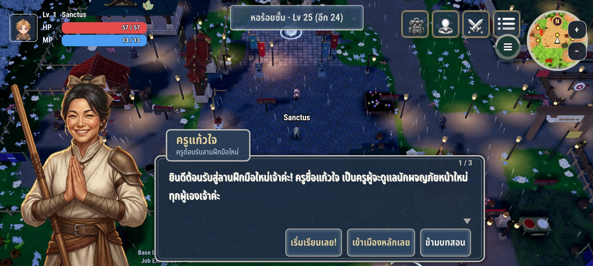

ปรับ HUD และเอฟเฟกต์ไอคอน รอบ 1
build 2026-11-26 00:31 UTC · source ddbff16b · เปิดเกมแบบชุดใหม่ · เปิดเกมแบบเดิม
ภาพทั้งหมดวาดด้วยซอฟต์แวร์ในคลาวด์ (ไม่ใช่การ์ดจอจริง / ไม่ใช่มือถือจริง)
1. PC ก่อน (หน้าตาเดิม)

2. PC หลัง - ปกติ (ไอคอนเมนูเป็นสีเทา ยาเป็นสีเดิม)
3. PC หลัง - ชี้ที่ "กระเป๋า" และช่องยาช่องแรก (เป็นสี + ยกนูน)
4. ขยายปุ่ม: บน = เดิม · กลาง = ใหม่ปกติ · ล่าง = ใหม่ตอนชี้

5. ทุกสถานะของปุ่มใช้ร่วม + คูลดาวน์เลขกลาง

6. บนเว็บจริง (Chromium 1366x768) ชี้ที่ "กระเป๋า"

7. บนเว็บจริง จอมือถือจำลอง 800x360 @4x (EMULATED)
